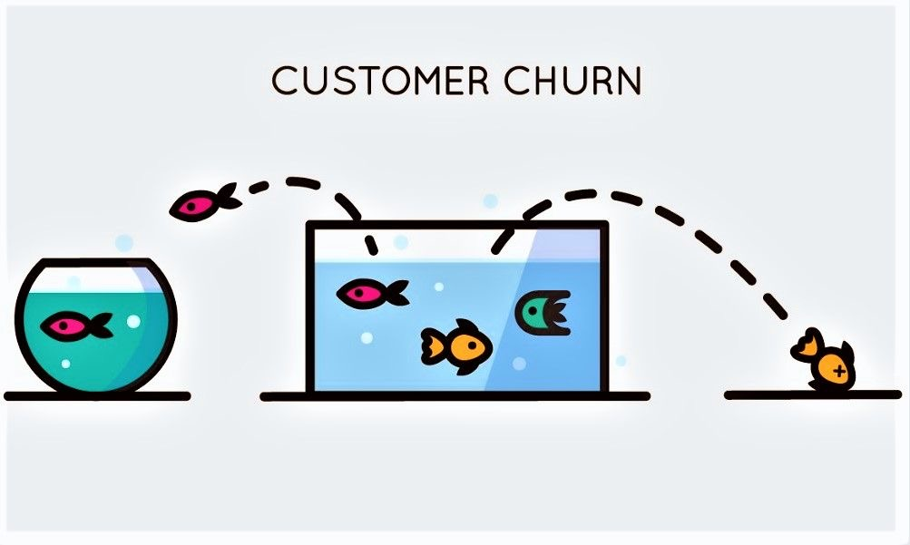

Customer Churn Analysis
Built an executive churn dashboard using PivotTables, GETPIVOTDATA, and dynamic slicers to evaluate 6,687 customer records and uncover key retention vulnerabilities behind a 26.86% churn rate.
View on GitHub
Evaluated structural turnover drivers across 1,470 employee records. Identified a 16.12% overall attrition rate (237 departures), isolated Sales (20.63%) and HR (19.05%) as high-risk departments, and highlighted overtime work (30.53% attrition) as a primary retention bottleneck.
View on GitHubConstructed an executive dashboard evaluating $1,710,971.47 in revenue across 1,000 global orders. Analyzed gross profit margins ($288,920.44 net profit / 16.89% GPM), regional shipping costs across market segments, and discount erosion limits.
View on GitHubExecuted an automated accounting reconciliation model bridging $222,907.30 in bank statement activity across 122 transactions against $253,663.77 in GL cash extract entries. Isolated GL-only items (-$31,253.55), bank-side adjustments (+$497.43), and timing differences to achieve $0.00 unreconciled variance.
View on GitHubBuilt an executive churn dashboard using PivotTables, GETPIVOTDATA, and dynamic slicers to evaluate 6,687 customer records and uncover key retention vulnerabilities behind a 26.86% churn rate.
View on GitHubAnalyzed customer purchasing behavior, order volume, and revenue trends using PostgreSQL JOINs, GROUP BY, HAVING, CASE statements, CTEs, and window functions.
View on GitHubQueried healthcare datasets in PostgreSQL using aggregations, filtering, and date functions to evaluate operational performance and patient admission metrics.
View on GitHub